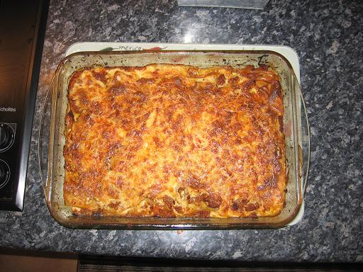

Recette n°127 :
Lasagnes à la marçoise

Ingrédients : pour 8 personnes
- 500 g de viande hachée
- 250 g de chair à saucisse
- 2 petites boîtes de tomates pelées
- 12 lasagnes
- 20 cl de vin rouge
- 3 carottes
- 1 gros oignon
- sel, poivre selon goût
- une poignée de gruyère râpé
- pour la béchamel :
- 80 g de farine
- 80 g de beurre
- 1 litre de lait
Préparation :
1 - préchauffer le four à 200C
2 - débiter les carottes en rondelles
4 - faire revenir carottes et oignons sans les faire brûler
5 - mélanger avec chair à saucisse, viande hachée,
tomates (à ne pas oublier), vin rouge et faire cuire à la
sauteuse 30 à 45 minutes en
remuant de temps en temps
6 - préparer une béchamel (cf. recette
n°126)
7 - dans un grand plat allant au four, disposer dans l'ordre :
- une couche de sauce
- une couche de lasagnes
- une couche de sauce
- une couche de béchamel
- une couche de lasagnes
- une couche de sauce
- une couche de béchamel
- le gruyère râpé
8 - mettre une louche d'eau sur le pourtour afin que les lasagnes ne
brûlent pas en périphérie
9 - enfourner et cuire de 30 à 40 minutes
Observations :